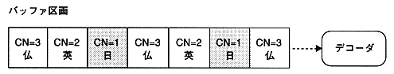

Applications that perform multilingual playback allocate MPEG audio data to each channel as shown below. When a channel to be played is set, only the corresponding channel data is sent to the decoder, and the other channel data is discarded. Discarding is performed in accordance with the transfer of the playback channel, so you can immediately switch channels and play the audio of another channel in synchronization with the video.
An example of playing Japanese channel number 1 is shown below. French and English audio data will be discarded along with the playback of Japanese data.

Figure 8.1 Multilingual playback